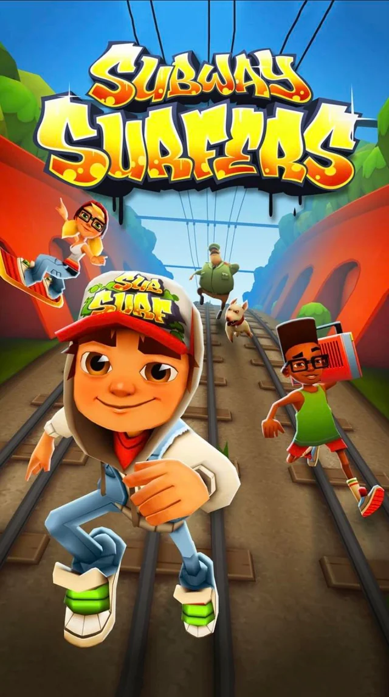
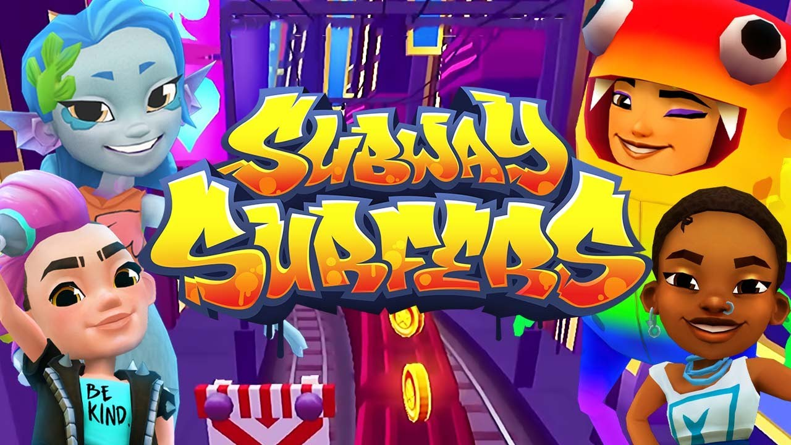
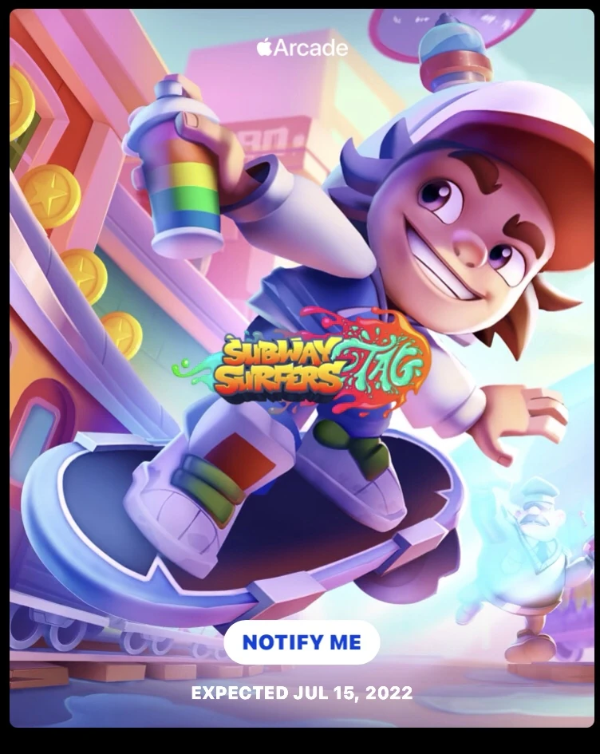

AUTEUR : Paul moupassa

Tout le monde connaît Subway Surfers, le célèbre jeu mobile qui consiste à courir sur des rails en évitant des trains et des obstacles, dans le but d’obtenir le meilleur score possible. Son principe repose sur un gameplay simple et efficace : slalom, sauts, glissades, bonus et hoverboards. Cette simplicité a largement contribué à son succès.
Sorti en 2012 , le jeu était disponible dès le départ sur Android et iOS. Rapidement, il est devenu un véritable phénomène mondial. Des millions, puis des milliards de joueurs s’y sont essayés, faisant de Subway Surfers un titre culte du jeu mobile.
Le jeu a été développé par SYBO Games, en collaboration avec Kiloo Games
L’introduction du world tour : un tournant majeur

Peu après la sortie du jeu, les développeurs introduisent le concept du World Tour. À chaque mise à jour, l’action se déroule dans une nouvelle ville du monde : Paris, New York, Tokyo, Rio, et bien d’autres.
Chaque destination apporte :
.jpg)
.jpg) Cette idée a profondément renouvelé l’expérience de jeu et a permis à Subway Surfers de gagner une popularité mondiale, en touchant un public toujours plus large.
Au fil du temps, Subway Surfers n’a cessé d’évoluer. Aujourd’hui, le jeu totalise plus de quatre milliards de téléchargements, ce qui en fait l’un des jeux mobiles les plus populaires de l’histoire.
Malgré ses plus de dix ans d’existence, il reste encore très joué. Des mises à jour régulières, des événements temporaires et de nouveaux contenus permettent au jeu de rester pertinent et attractif
Cette idée a profondément renouvelé l’expérience de jeu et a permis à Subway Surfers de gagner une popularité mondiale, en touchant un public toujours plus large.
Au fil du temps, Subway Surfers n’a cessé d’évoluer. Aujourd’hui, le jeu totalise plus de quatre milliards de téléchargements, ce qui en fait l’un des jeux mobiles les plus populaires de l’histoire.
Malgré ses plus de dix ans d’existence, il reste encore très joué. Des mises à jour régulières, des événements temporaires et de nouveaux contenus permettent au jeu de rester pertinent et attractif
- de nouveaux décors,
- des personnages inédits,
- des thèmes visuels spécifiques à la ville visitée.
Y aura-t-il une suite officielle : Subway surfer 2 ?
C’est une question qui revient très souvent.
Concrètement, il n’existe pas de jeu intitulé Subway Surfers 2 développé et publié par SYBO Games.
Les informations affirmant l’existence d’une suite directe sont fausses.
SYBO Games n’a fait aucune annonce officielle concernant un Subway Surfers 2.
De plus :
aucun jeu officiel de ce nom n’est disponible sur le Play Store ou l’App Store,
les applications portant un nom similaire sont généralement des copies, des imitations ou des contenus trompeurs.
SYBO Games a confirmé à plusieurs reprises préférer faire évoluer le jeu original de 2012 plutôt que de lancer une suite numérotée. Cette décision est probablement à l’origine de nombreuses confusions.
Le jeu a tellement évolué visuellement et mécaniquement que certains joueurs ont l’impression qu’il s’agit déjà d’un “Subway Surfers 2”.
Existe-t-il malgré tout un jeu officiel lié a subway surfers??
subway surfers tag

Sortie : 2022
Jeu officiel développé par SYBO Games
Disponible exclusivement sur Apple Arcade
Contrairement au jeu original :
ce n’est pas un endless runner classique,
il propose un monde semi-ouvert,
il met l’accent sur l’exploration et les défis.
Beaucoup de joueurs ont cru qu’il s’agissait de Subway Surfers 2, mais ce n’est pas le cas. Il s’agit plutôt d’une expérience alternative, destinée à explorer l’univers de Subway Surfers sous une autre forme.
Sur les réseaux sociaux, notamment sur YouTube, on trouve de nombreuses vidéos présentant de prétendus teasers de Subway Surfers 2. La plupart de ces contenus ne reposent sur aucune information officielle.
Il est donc important de rester prudent et de ne pas se fier systématiquement à ce que l’on voit en ligne
#conclusion
À ce jour :
Subway Surfers 2 n’existe pas officiellement,
SYBO Games continue de faire évoluer le jeu original,
un jeu dérivé officiel existe (Subway Surfers Tag), mais il ne s’agit pas d’une suite directe.
Comme toujours, en cas d’annonce officielle ou de changement, les informations seront mises à jour. Comme toujour
nous vous tiendrons informés